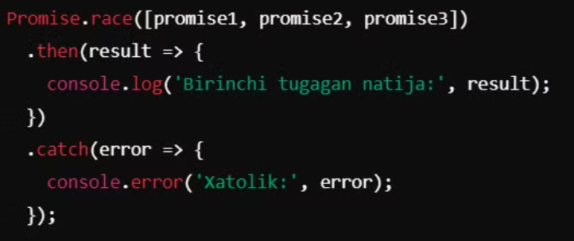
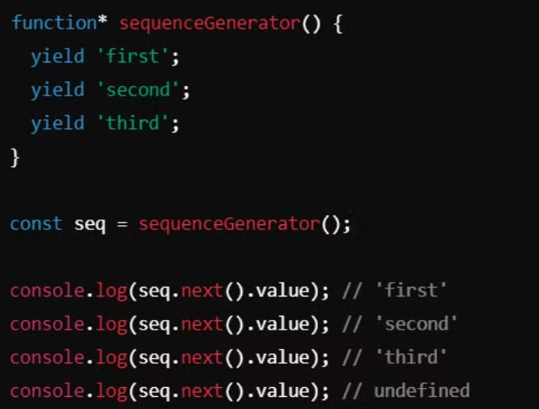
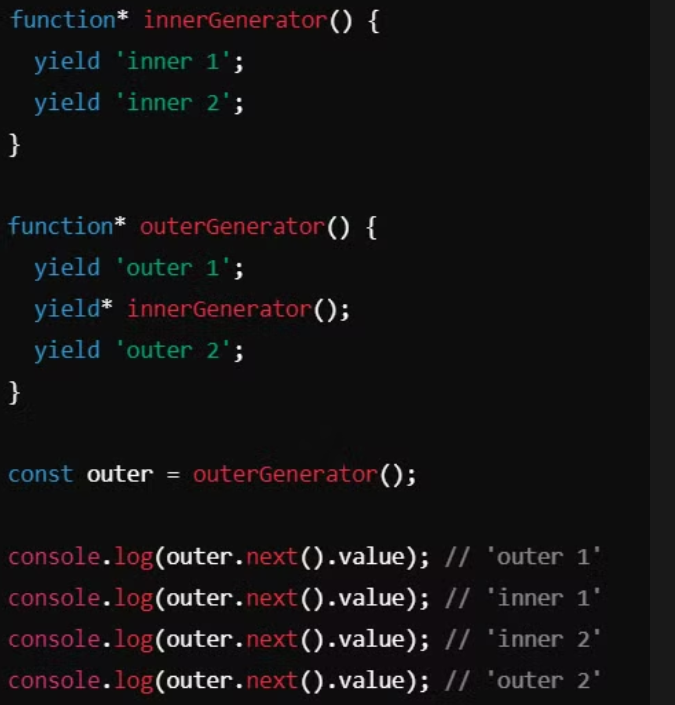

JavaScript nima ?
JavaScript — bu dinamik, ko‘p paradigmalı, keng qo‘llaniladigan dasturlash tili. U asosan veb-ilovalarni
rivojlantirishda ishlatiladi, lekin server tomonida ham, mobil, ish stoli ilovalari va o‘yinlarni yaratishda ham
qo‘llaniladi. JavaScriptni to‘liq tushunish uchun uni turli jihatlar bo‘yicha ko‘rib chiqish muhim.
1. JavaScript tarixi
JavaScript dasturlash tili Netscape kompaniyasining xodimi Brendan Eich tomonidan 1995-yilda yaratildi. U dastlab
"Mocha", keyin "LiveScript", oxirida esa "JavaScript" deb nomlandi. Boshida Java tiliga o‘xshash ko‘rinar edi,
lekin o‘zida farqli va soddalashtirilgan funksiyalarni jamlagan edi. JavaScript hozirgi kunda **ECMAScript**
standarti asosida rivojlanmoqda.
ECMAScript (ES) — bu JavaScript dasturlash tilining standartidir. ECMAScript standarti JavaScript tilining
sintaksisi, semantikasini va asosiy xususiyatlarini aniqlaydi. U xalqaro standartlar tashkiloti Ecma
International tomonidan ishlab chiqiladi va kengaytiriladi.
2. JavaScriptning qo‘llanish sohalari
JavaScript asosan veb-brauzerlarda ishlaydigan kod yozish uchun yaratilgan, lekin hozirda undan turli sohalarda
foydalaniladi:
-
Frontend rivojlantirish: UI va UX yaxshilash, interaktivlik qo‘shish, veb sahifalarga dinamizm olib kirish
uchun.
-
Backend rivojlantirish: Node.js yordamida server tomonida ishlovchi kodlar yozish mumkin.
-
Mobil ilovalar: React Native va Ionic kabi freymvorklar orqali mobil ilovalarni yaratish mumkin.
-
Desktop ilovalar: Electron orqali ish stoli ilovalarini yaratish mumkin.
-
O‘yin yaratish: Phaser, Three.js kabi kutubxonalar o‘yin ishlab chiqish uchun ishlatiladi.
3. Ma'lumot turlari (Data Types)
JavaScriptda ma'lumotlar turi dinamik bo‘lib, quyidagi asosiy turlarga ega:
Primitive Types:
-
String: "Salom"
-
Number: 123
-
Boolean: true, false
-
null: Ma'lum bo‘lmagan qiymat.
-
undefined: Qiymat berilmagan.
-
Symbol: Yagona qiymatlarni ifodalovchi tur.
Object (Obyektlar):
- Obyektlar kalit-qiymat juftlari sifatida ishlatiladi: { name: "Test", age: 25 }.
async/await
Async/Await'ning asosiy tushunchalari:
1. Async funksiyalar
async kalit so‘zi yordamida funksiyalar asenkron deb belgilanadi. Bu funksiya har doim Promise qaytaradi, va
undagi qiymatni olish uchun await kalit so‘zi ishlatiladi. Agar funksiya oddiy qiymat qaytaradigan bo‘lsa, u
avtomatik ravishda resolved Promise’ga o‘raladi.
2. Await kalit so‘zi
await kalit so‘zi faqat async funksiyalar ichida ishlaydi. U Promise hal bo‘lguncha kutadi va resolved bo‘lgan
qiymatni qaytaradi. await ishlatilgan joyda kod kutish holatiga o'tadi va shu nuqtada JavaScript o‘zining event
loop jarayonini davom ettiradi.
Foydalari va afzalliklari:
-
Ko‘rinishi sinxron kabi: async/await yordamida kod sinxron ko‘rinadi, lekin asenkron ishlaydi. Bu kodni
osonroq o‘qish va tushunish imkonini beradi.
-
Promise chaining'dan saqlanish: Agar Promise bilan ishlasangiz, zanjirlangan .then() metodlaridan
foydalanish kerak bo‘ladi. Bu esa uzun va murakkab kodga olib kelishi mumkin. Async/await buni
soddalashtiradi.
-
Xato bilan ishlashni yaxshilaydi: Promise'dagi .catch() blokidan farqli ravishda, try/catch bloklari orqali
xatolarni qo‘lga olish ancha tushunarli va intuitiv bo‘ladi.

Promise
JavaScript 2015 yil (ES6) yangilanishida Promise ob'ekti joriy etildi.
Promise Holatlari:
-
Pending: Promise hali bajarilmagan va natija yoki xatolik hali mavjud emas.
-
Fulfilled: Promise muvaffaqiyatli bajarilgan va resolve chaqirilgan.
-
Rejected: Promise bajarilmagan va reject chaqirilgan.
Promise JavaScript dasturlash tilida asinxron operatsiyalarni boshqarish va ularning natijalarini ishlash uchun
ishlatiladigan kuchli vositadir. Promise obyektlari asinxron operatsiya tugagandan so'ng ma'lumotlarni qaytarish
yoki xatolikni bildirishi mumkin.
Promise obyekti yaratishda, asinxron operatsiyani amalga oshiruvchi funksiya (executor funksiyasi) beriladi. Bu
funksiya ikkita argumentni qabul qiladi: resolve va reject funksiyalari.

then ,catch va finally Metodlari:
-
then(onFulfilled, onRejected) — bu metod Promise muvaffaqiyatli bajarilganda (resolve chaqirilganda) yoki
xatolik yuz berilganda (reject chaqirilganda) qo‘llaniladigan funksiyalarni qabul qiladi.
-
catch(onRejected) — xatoliklar uchun alohida metod bo‘lib, Promise xato bilan tugaganida chaqiriladi.
-
finally metodi Promise bajarilgandan so'ng, muvaffaqiyatli yoki xatolik bilan tugaganidan qat'i nazar,
bajariladi.

Parallel Asinxron Operatsiyalar
Promise.all(promises) — bir nechta Promise obyekti to‘plamini oladi va barcha Promiselar muvaffaqiyatli
bajarilsa, resolve bo‘lishi, aks holda reject bo‘ladi.

allSettled
Promise.allSettled(promises) — barcha Promiselar muvaffaqiyatli yoki xatolik bilan tugagandan so‘ng, fulfilled
yoki rejected holatida qaytaradi.

race
Promise.race(promises) — eng birinchi bajarilgan Promisening natijasini qaytaradi.

any
Promise.any(promises) — barcha Promiselar reject bo'lsa, AggregateErrorni qaytaradi, aks holda birinchi
muvaffaqiyatli natijani qaytaradi.

yield
JavaScript'da yield kalit so'zi generator funksiyalar bilan ishlash uchun mo'ljallangan. yield yordamida
generatorlar qiymatlarni ketma-ket ravishda qaytarishi mumkin va generator funksiyalarining bajarilishini
to'xtatib, keyin qayta davom ettirish imkonini beradi.
Generator
Generator Funksiyalar:
-
Generator funksiyalar function* sintaksisi bilan yaratiladi. *belgisining mavjudligi bu funksiyaning
generator funksiyasi ekanligini bildiradi.
-
Generator funksiyalari yield kalit so'zini ishlatib, to'xtatish nuqtalarini belgilashga imkon beradi va
yield orqali qiymatlarni qaytaradi.
-
Generatorlar iterator sifatida ishlaydi, bu esa ularni for-of loop yoki forEach kabi iteratorlarni
qo'llab-quvvatlaydigan strukturalarda ishlatishga imkon beradi.

-
yield qiymatlarni generatordan tashqariga qaytarish uchun ishlatiladi. Har safar next() metodini
chaqirganda, generator yield qatorida to'xtaydi va qiymat qaytaradi.
-
yield generator funksiyasining bajarilishini vaqtincha to'xtatadi va keyin qayta davom ettirishi mumkin.
Boshqa qiymatlarni yield yordamida qaytarish va generator funksiyasining holatini saqlash mumkin.
-
yield generator funksiyasining bajarilishini vaqtincha to'xtatadi va keyin qayta davom ettirishi mumkin.
Boshqa qiymatlarni yield yordamida qaytarish va generator funksiyasining holatini saqlash mumkin.

yield*
yield* sintaksisi boshqa generator funksiyalarini yoki iterativ obyektlarni generator ichida chaqirish uchun
ishlatiladi. Bu orqali ichki generatorlardan yoki iteratorlardan qiymatlarni olish mumkin.

Asinxron Generatorlar
-
ES2018 (ES9) da asinxron generatorlar joriy etildi. Bu generatorlar async function* sintaksisi bilan
yaratiladi va await kalit so'zi yordamida asinxron qiymatlarni qaytarishi mumkin.
-
Asinxron generatorlar for-await-of loop yordamida iteratsiya qilinadi va ular asinxron iterativ obyektlar
bilan ishlash imkonini beradi.